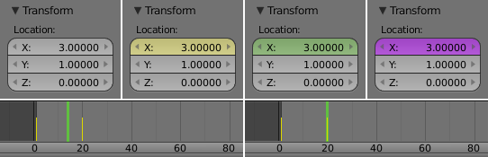

Вступ¶
Анімація -- це спосіб зробити, щоб об'єкт рухався або змінював форму у часі. Об'єкти можуть бути анімовані багатьма способами:
- Рухання об'єкта, як цілого
- Змінення їх позицій, орієнтацій або розмірів у часі;
- Деформування їх
- Анімування їх вершин або керівних точок;
- Успадкування анімації
- Спричинення рухання об'єкта на основі переміщення іншого об'єкта (наприклад, його предка, гачка, арматури тощо...).
У цій главі ми розглянемо перші два способи, але основи, дані тут, є фактично базовими і для розуміння наступних глав.
Анімація зазвичай отримується за допомогою «ключкадрів» -- keyframes.
Xem thêm
Споріднені Підрозділи
Підрозділи «Оснащення» -- Rigging section, «Імітація Фізики» -- Physical Simulation та «Простеження Руху» -- Motion Tracking.
Кольори Стану¶

Кольори стану властивостей.
Властивості можуть мати різні кольори та пункти меню для різних станів при анімуванні.
| Сірий | Стандартно |
| Жовтий | Ключкадри |
| Зелений | Анімовано |
| Пурпуровий | Драйвер |